Ausdauer – der lange Atem – Lesespurgeschichte mit Rätselaufgaben (Klasse 8)

Baking Christmas Cookies – Lesespurgeschichte mit Rätselaufgaben auf Englisch (Klasse 8)

Bewusst konsumieren – die Reise eines T-Shirts – Lesespurgeschichte mit Rätselaufgaben (Klasse 8)

Das Akkordeon – Lesespurgeschichte mit Rätselaufgaben (Klasse 8)

Das Atom – Lesespurgeschichte mit Rätselaufgaben (Klasse 8)

Das Automobil – Lesespurgeschichte mit Rätselaufgaben (Klasse 8)

Das Bodenprofil – Lesespurgeschichte mit Rätselaufgaben (Klasse 8)

Das Cajón – Lesespurgeschichte mit Rätselaufgaben (Klasse 8)

Das Chamäleon – Lesespurgeschichte mit Rätselaufgaben (Klasse 8)
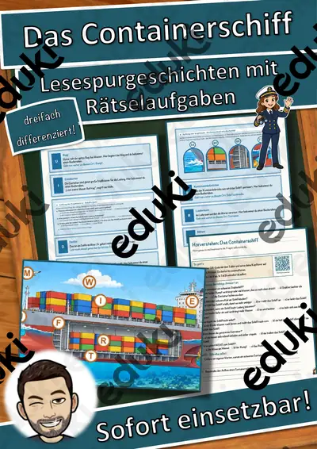
Das Containerschiff – Lesespurgeschichte mit Rätselaufgaben (Klasse 8)

Das Delta – Lesespurgeschichte mit Rätselaufgaben (Klasse 8)

Das Deutsche Kaiserreich – Lesespurgeschichte mit Rätselaufgaben (Klasse 8)

Das Echolot – Lesespurgeschichte mit Rätselaufgaben (Klasse 8)

Das Feuerzeug – Lesespurgeschichte mit Rätselaufgaben (Klasse 8)

Das Flugzeug – Lesespurgeschichte mit Rätselaufgaben (Klasse 8)
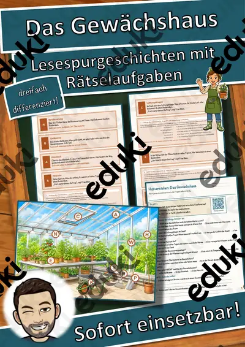
Das Gewächshaus – Lesespurgeschichte mit Rätselaufgaben (Klasse 8)

Das Herz – Lesespurgeschichte mit Rätselaufgaben (Klasse 8)

Das Hochgebirge – Lesespurgeschichte mit Rätselaufgaben (Klasse 8)

Das Hochmoor – Lesespurgeschichte mit Rätselaufgaben (Klasse 8)

Das Immunsystem – Lesespurgeschichte mit Rätselaufgaben (Klasse 8)
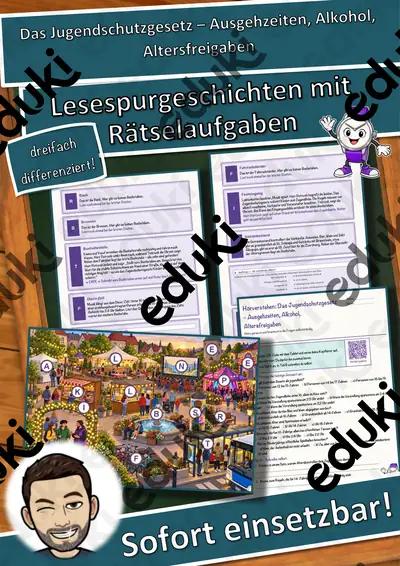
Das Jugendschutzgesetz – Ausgehzeiten, Alkohol, Altersfreigaben – Lesespurgeschichte mit Rätselaufgaben (Klasse 8)

Das Klavier – Lesespurgeschichte mit Rätselaufgaben (Klasse 8)

Das Kniegelenk – Lesespurgeschichte mit Rätselaufgaben (Klasse 8)

Das Korallenriff – Lesespurgeschichte mit Rätselaufgaben (Klasse 8)

Das Krokodil – Lesespurgeschichte mit Rätselaufgaben (Klasse 8)

Das Labor – Lesespurgeschichte mit Rätselaufgaben (Klasse 8)

Das Luftschiff – Lesespurgeschichte mit Rätselaufgaben (Klasse 8)

Das Martinsfeuer – was ein Feuer braucht und wie man es löscht – Lesespurgeschichte mit Rätselaufgaben (Klasse 8)

Das Mikroskop – Lesespurgeschichte mit Rätselaufgaben (Klasse 8)

Das Moor – Lesespurgeschichte mit Rätselaufgaben (Klasse 8)
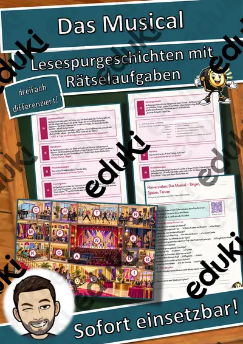
Das Musical – Singen, Spielen, Tanzen – Lesespurgeschichte mit Rätselaufgaben (Klasse 8)

Das Pumpspeicherkraftwerk – Lesespurgeschichte mit Rätselaufgaben (Klasse 8)

Das Rathaus – Lesespurgeschichte mit Rätselaufgaben (Klasse 8)

Das Reh – Lesespurgeschichte mit Rätselaufgaben (Klasse 8)
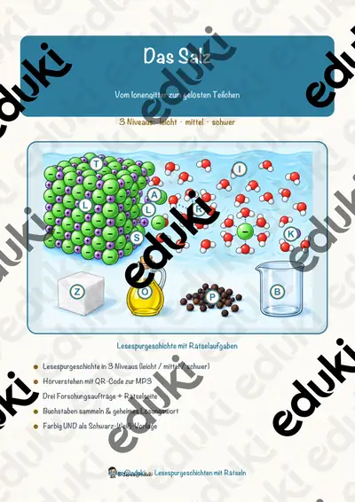
Das Salz – Lesespurgeschichte mit Rätselaufgaben (Klasse 8)

Das Schiffshebewerk – Lesespurgeschichte mit Rätselaufgaben (Klasse 8)

Das Schlagzeug – Lesespurgeschichte mit Rätselaufgaben (Klasse 8)

Das Segelschiff – Lesespurgeschichte mit Rätselaufgaben (Klasse 8)

Das Sinfonieorchester – Lesespurgeschichte mit Rätselaufgaben (Klasse 8)

Das Streichholz – Lesespurgeschichte mit Rätselaufgaben (Klasse 8)

Das Teleskop – Lesespurgeschichte mit Rätselaufgaben (Klasse 8)

Das Thermometer – Lesespurgeschichte mit Rätselaufgaben (Klasse 8)

Das Tiefdruckgebiet – Lesespurgeschichte mit Rätselaufgaben (Klasse 8)

Das U-Boot – Lesespurgeschichte mit Rätselaufgaben (Klasse 8)
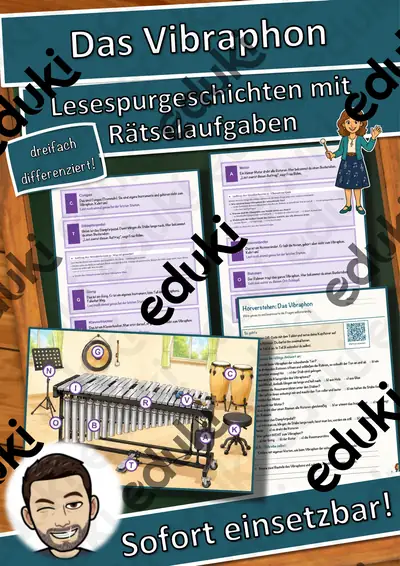
Das Vibraphon – Lesespurgeschichte mit Rätselaufgaben (Klasse 8)

Das Vogelei – Lesespurgeschichte mit Rätselaufgaben (Klasse 8)

Das Wasserkraftwerk – Lesespurgeschichte mit Rätselaufgaben (Klasse 8)

Das Wasserwerk – Lesespurgeschichte mit Rätselaufgaben (Klasse 8)

Das Wildschwein – Lesespurgeschichte mit Rätselaufgaben (Klasse 8)

Das Xylophon – Lesespurgeschichte mit Rätselaufgaben (Klasse 8)

Das Zeitlabor – wie Uhren die Zeit messen und warum wir umstellen – Lesespurgeschichte mit Rätselaufgaben (Klasse 8)
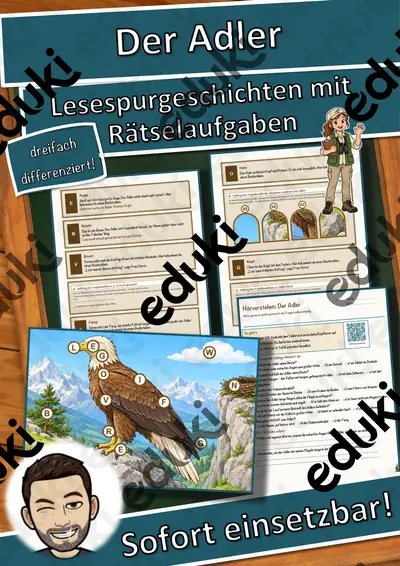
Der Adler – Lesespurgeschichte mit Rätselaufgaben (Klasse 8)

Der Ameisenhaufen – Lesespurgeschichte mit Rätselaufgaben (Klasse 8)

Der Apfelbaum – Lesespurgeschichte mit Rätselaufgaben (Klasse 8)

Der Atombau – Lesespurgeschichte mit Rätselaufgaben (Klasse 8)

Der Aufzug – Lesespurgeschichte mit Rätselaufgaben (Klasse 8)

Der Backofen – Lesespurgeschichte mit Rätselaufgaben (Klasse 8)

Der Bagger – Lesespurgeschichte mit Rätselaufgaben (Klasse 8)
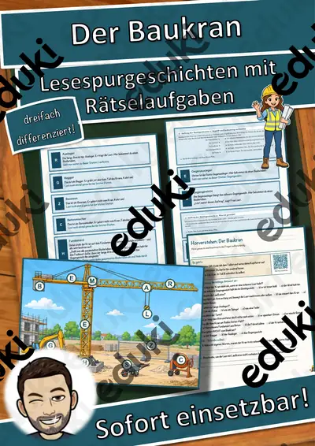
Der Baukran – Lesespurgeschichte mit Rätselaufgaben (Klasse 8)

Der Baumstamm – Lesespurgeschichte mit Rätselaufgaben (Klasse 8)

Der Bergsee – Lesespurgeschichte mit Rätselaufgaben (Klasse 8)
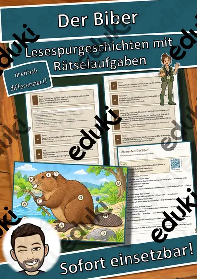
Der Biber – Lesespurgeschichte mit Rätselaufgaben (Klasse 8)

Der Braunkohletagebau – Lesespurgeschichte mit Rätselaufgaben (Klasse 8)

Der Brunnen – Lesespurgeschichte mit Rätselaufgaben (Klasse 8)

Der Bundestag – Lesespurgeschichte mit Rätselaufgaben (Klasse 8)

Der Bunsenbrenner – Lesespurgeschichte mit Rätselaufgaben (Klasse 8)

Der Bär – Lesespurgeschichte mit Rätselaufgaben (Klasse 8)

Der Canyon – Lesespurgeschichte mit Rätselaufgaben (Klasse 8)

Der Dachs – Lesespurgeschichte mit Rätselaufgaben (Klasse 8)

Der Deich – Lesespurgeschichte mit Rätselaufgaben (Klasse 8)

Der Delfin – Lesespurgeschichte mit Rätselaufgaben (Klasse 8)

Der Dickdarm – Lesespurgeschichte mit Rätselaufgaben (Klasse 8)

Der Dudelsack – Lesespurgeschichte mit Rätselaufgaben (Klasse 8)

Der Dünndarm – Lesespurgeschichte mit Rätselaufgaben (Klasse 8)

Der Eisberg – Lesespurgeschichte mit Rätselaufgaben (Klasse 8)

Der Elektromotor – Lesespurgeschichte mit Rätselaufgaben (Klasse 8)

Der Fahrraddynamo – Lesespurgeschichte mit Rätselaufgaben (Klasse 8)

Der Fallschirm – Lesespurgeschichte mit Rätselaufgaben (Klasse 8)

Der Feuerlöscher – Lesespurgeschichte mit Rätselaufgaben (Klasse 8)

Der Feuersalamander – Lesespurgeschichte mit Rätselaufgaben (Klasse 8)

Der Fjord – Lesespurgeschichte mit Rätselaufgaben (Klasse 8)

Der Fliegenpilz – Lesespurgeschichte mit Rätselaufgaben (Klasse 8)

Der Flughafen – Lesespurgeschichte mit Rätselaufgaben (Klasse 8)

Der Fluss – Lesespurgeschichte mit Rätselaufgaben (Klasse 8)

Der Fotoapparat – Lesespurgeschichte mit Rätselaufgaben (Klasse 8)

Der Fuchs – Lesespurgeschichte mit Rätselaufgaben (Klasse 8)
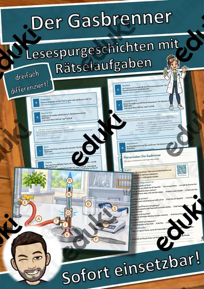
Der Gasbrenner – Lesespurgeschichte mit Rätselaufgaben (Klasse 8)

Der Geysir – Lesespurgeschichte mit Rätselaufgaben (Klasse 8)

Der Gletscher – Lesespurgeschichte mit Rätselaufgaben (Klasse 8)
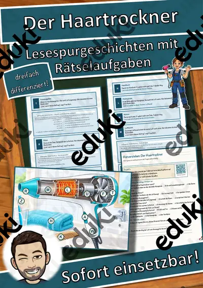
Der Haartrockner – Lesespurgeschichte mit Rätselaufgaben (Klasse 8)

Der Hafen – Lesespurgeschichte mit Rätselaufgaben (Klasse 8)

Der Hai – Lesespurgeschichte mit Rätselaufgaben (Klasse 8)

Der Hamster – Lesespurgeschichte mit Rätselaufgaben (Klasse 8)

Der Hase – Lesespurgeschichte mit Rätselaufgaben (Klasse 8)

Der Heißluftballon – Lesespurgeschichte mit Rätselaufgaben (Klasse 8)
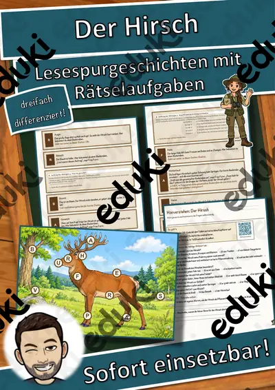
Der Hirsch – Lesespurgeschichte mit Rätselaufgaben (Klasse 8)

Der Hirschkäfer – Lesespurgeschichte mit Rätselaufgaben (Klasse 8)

Der Hubschrauber – Lesespurgeschichte mit Rätselaufgaben (Klasse 8)

Der Hummer – Lesespurgeschichte mit Rätselaufgaben (Klasse 8)

Der Kaktus – Lesespurgeschichte mit Rätselaufgaben (Klasse 8)

Der Kaminofen – Verbrennung und Kohlenmonoxid – Lesespurgeschichte mit Rätselaufgaben (Klasse 8)

Der Kehlkopf – Lesespurgeschichte mit Rätselaufgaben (Klasse 8)

Der Klimawandel – Lesespurgeschichte mit Rätselaufgaben (Klasse 8)

Der Knochen – Lesespurgeschichte mit Rätselaufgaben (Klasse 8)

Der Kompass – Lesespurgeschichte mit Rätselaufgaben (Klasse 8)

Der Kompost – Lesespurgeschichte mit Rätselaufgaben (Klasse 8)

Der Komposthaufen – Lesespurgeschichte mit Rätselaufgaben (Klasse 8)

Der Konzertsaal – Lesespurgeschichte mit Rätselaufgaben (Klasse 8)

Der Kran – Lesespurgeschichte mit Rätselaufgaben (Klasse 8)

Der Kranich – Lesespurgeschichte mit Rätselaufgaben (Klasse 8)

Der Kühlschrank – Lesespurgeschichte mit Rätselaufgaben (Klasse 8)
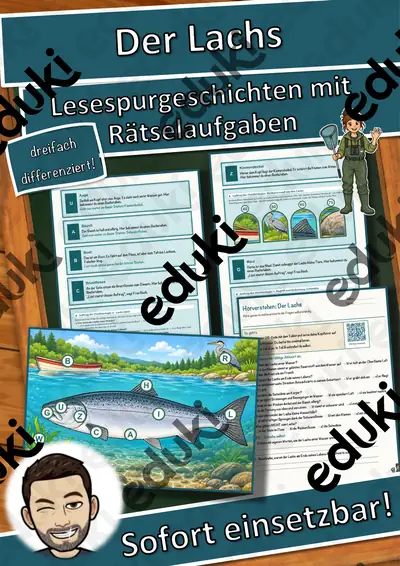
Der Lachs – Lesespurgeschichte mit Rätselaufgaben (Klasse 8)

Der Leserbrief – meine Meinung in der Zeitung – Lesespurgeschichte mit Rätselaufgaben (Klasse 8)

Der Leuchtturm – Lesespurgeschichte mit Rätselaufgaben (Klasse 8)
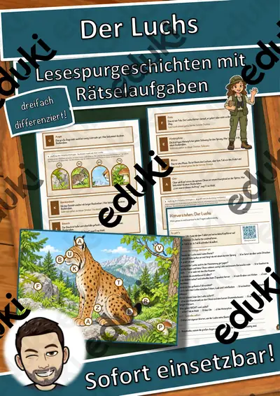
Der Luchs – Lesespurgeschichte mit Rätselaufgaben (Klasse 8)

Der Löwenzahn – Lesespurgeschichte mit Rätselaufgaben (Klasse 8)

Der Magen – Lesespurgeschichte mit Rätselaufgaben (Klasse 8)
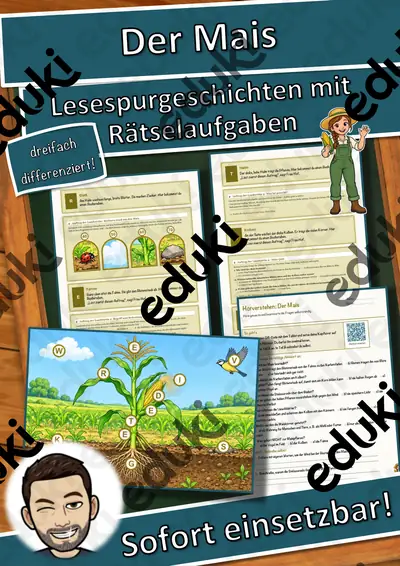
Der Mais – Lesespurgeschichte mit Rätselaufgaben (Klasse 8)

Der Meeresboden – Lesespurgeschichte mit Rätselaufgaben (Klasse 8)

Der Muskel – Lesespurgeschichte mit Rätselaufgaben (Klasse 8)

Der Mäander – Lesespurgeschichte mit Rätselaufgaben (Klasse 8)

Der Mähdrescher – Lesespurgeschichte mit Rätselaufgaben (Klasse 8)
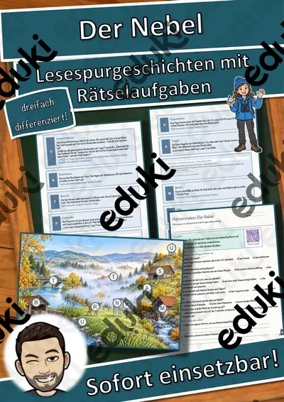
Der Nebel – Lesespurgeschichte mit Rätselaufgaben (Klasse 8)

Der Pinguin – Lesespurgeschichte mit Rätselaufgaben (Klasse 8)
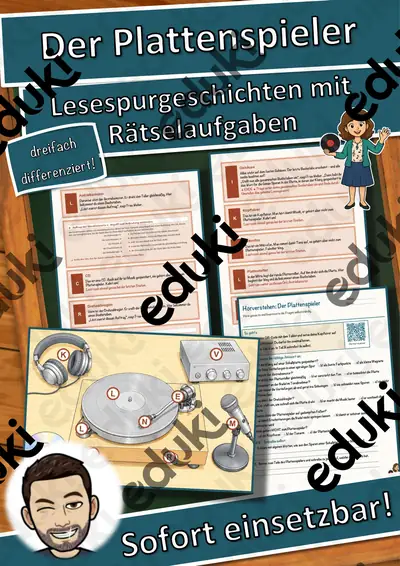
Der Plattenspieler – Lesespurgeschichte mit Rätselaufgaben (Klasse 8)

Der Rauchmelder – Lesespurgeschichte mit Rätselaufgaben (Klasse 8)

Der Regenwurm – Lesespurgeschichte mit Rätselaufgaben (Klasse 8)

Der Satellit – Lesespurgeschichte mit Rätselaufgaben (Klasse 8)
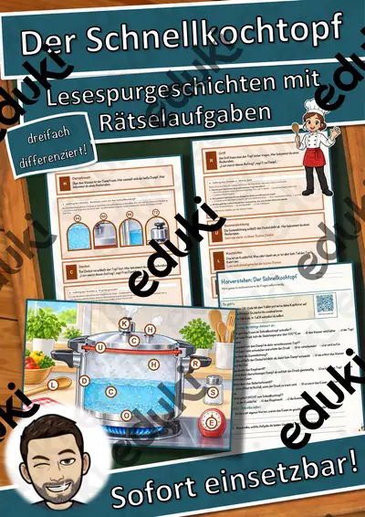
Der Schnellkochtopf – Lesespurgeschichte mit Rätselaufgaben (Klasse 8)

Der Schulserver – Lesespurgeschichte mit Rätselaufgaben (Klasse 8)

Der Schädel – Lesespurgeschichte mit Rätselaufgaben (Klasse 8)

Der Sportverein – mitmachen, mithelfen, mitbestimmen – Lesespurgeschichte mit Rätselaufgaben (Klasse 8)

Der Staubsauger – Lesespurgeschichte mit Rätselaufgaben (Klasse 8)

Der Steinbruch – Lesespurgeschichte mit Rätselaufgaben (Klasse 8)
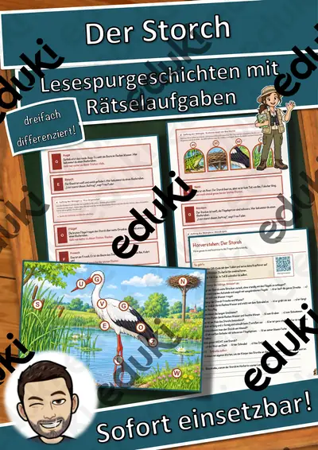
Der Storch – Lesespurgeschichte mit Rätselaufgaben (Klasse 8)

Der Tintenfisch – Lesespurgeschichte mit Rätselaufgaben (Klasse 8)

Der Toaster – Lesespurgeschichte mit Rätselaufgaben (Klasse 8)

Der Tsunami – Lesespurgeschichte mit Rätselaufgaben (Klasse 8)

Der Tunnel – Lesespurgeschichte mit Rätselaufgaben (Klasse 8)

Der Turmdrehkran – Lesespurgeschichte mit Rätselaufgaben (Klasse 8)

Der Wasserfall – Lesespurgeschichte mit Rätselaufgaben (Klasse 8)

Der Wasserkocher – Lesespurgeschichte mit Rätselaufgaben (Klasse 8)

Der Wasserturm – Lesespurgeschichte mit Rätselaufgaben (Klasse 8)

Der Weizen – Lesespurgeschichte mit Rätselaufgaben (Klasse 8)

Der Winterreifen – Lesespurgeschichte mit Rätselaufgaben (Klasse 8)

Der Wolf – Lesespurgeschichte mit Rätselaufgaben (Klasse 8)
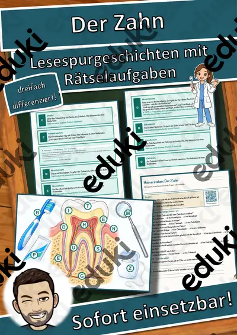
Der Zahn – Lesespurgeschichte mit Rätselaufgaben (Klasse 8)

Der Zukunftstag – Lesespurgeschichte mit Rätselaufgaben (Klasse 8)

Die Achterbahn – Lesespurgeschichte mit Rätselaufgaben (Klasse 8)

Die Ameise – Lesespurgeschichte mit Rätselaufgaben (Klasse 8)

Die Amsel – Lesespurgeschichte mit Rätselaufgaben (Klasse 8)

Die Atmosphäre – Lesespurgeschichte mit Rätselaufgaben (Klasse 8)

Die Bakterien – Lesespurgeschichte mit Rätselaufgaben (Klasse 8)

Die Bakterienzelle – Lesespurgeschichte mit Rätselaufgaben (Klasse 8)

Die Balkenwaage – Lesespurgeschichte mit Rätselaufgaben (Klasse 8)

Die Bank – Lesespurgeschichte mit Rätselaufgaben (Klasse 8)
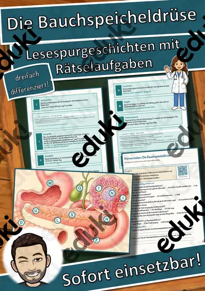
Die Bauchspeicheldrüse – Lesespurgeschichte mit Rätselaufgaben (Klasse 8)

Die Bestäubung – Lesespurgeschichte mit Rätselaufgaben (Klasse 9)

Die Biberburg – Lesespurgeschichte mit Rätselaufgaben (Klasse 8)

Die Blockflöte – Lesespurgeschichte mit Rätselaufgaben (Klasse 8)

Die Bogenbrücke – Lesespurgeschichte mit Rätselaufgaben (Klasse 8)

Die Chromatographie – Lesespurgeschichte mit Rätselaufgaben (Klasse 8)

Die Dampflokomotive – Lesespurgeschichte mit Rätselaufgaben (Klasse 8)

Die Dampfmaschine – Lesespurgeschichte mit Rätselaufgaben (Klasse 8)

Die Destillation – Lesespurgeschichte mit Rätselaufgaben (Klasse 8)

Die Eiche – Lesespurgeschichte mit Rätselaufgaben (Klasse 8)

Die Eisenbahn verändert das Land – Lesespurgeschichte mit Rätselaufgaben (Klasse 8)

Die Entsalzungsanlage – Lesespurgeschichte mit Rätselaufgaben (Klasse 8)
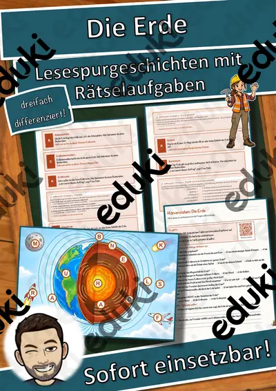
Die Erde – Lesespurgeschichte mit Rätselaufgaben (Klasse 8)

Die Erdkröte – Lesespurgeschichte mit Rätselaufgaben (Klasse 8)

Die Eule – Lesespurgeschichte mit Rätselaufgaben (Klasse 8)

Die Fahrradpumpe – Lesespurgeschichte mit Rätselaufgaben (Klasse 8)

Die Filtration – Lesespurgeschichte mit Rätselaufgaben (Klasse 8)

Die Fotosynthese – Lesespurgeschichte mit Rätselaufgaben (Klasse 8)

Die Französische Revolution – Lesespurgeschichte mit Rätselaufgaben (Klasse 8)
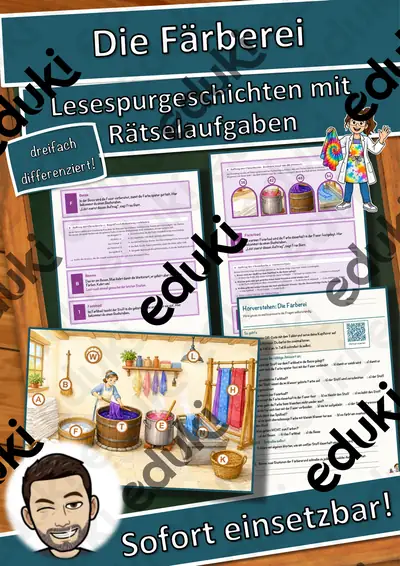
Die Färberei – Lesespurgeschichte mit Rätselaufgaben (Klasse 8)

Die Geige – Lesespurgeschichte mit Rätselaufgaben (Klasse 8)

Die Gitarre – Lesespurgeschichte mit Rätselaufgaben (Klasse 8)

Die Glashütte – Lesespurgeschichte mit Rätselaufgaben (Klasse 8)

Die Glühlampe – Lesespurgeschichte mit Rätselaufgaben (Klasse 8)
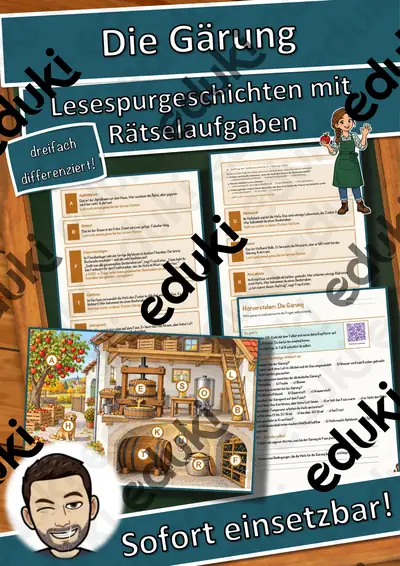
Die Gärung – Lesespurgeschichte mit Rätselaufgaben (Klasse 8)
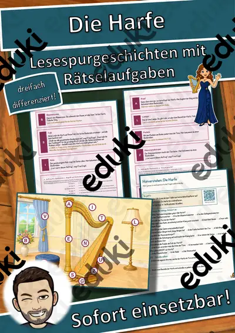
Die Harfe – Lesespurgeschichte mit Rätselaufgaben (Klasse 8)

Die Haut – Lesespurgeschichte mit Rätselaufgaben (Klasse 8)

Die Hecke – Lesespurgeschichte mit Rätselaufgaben (Klasse 8)

Die Heuschrecke – Lesespurgeschichte mit Rätselaufgaben (Klasse 8)

Die Hängebrücke – Lesespurgeschichte mit Rätselaufgaben (Klasse 8)

Die Höhle – Lesespurgeschichte mit Rätselaufgaben (Klasse 8)

Die Industrialisierung – Lesespurgeschichte mit Rätselaufgaben (Klasse 8)
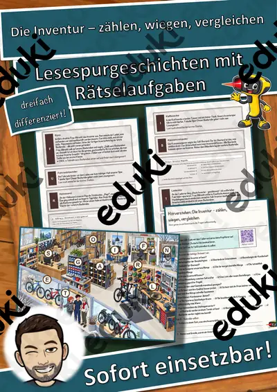
Die Inventur – zählen, wiegen, vergleichen – Lesespurgeschichte mit Rätselaufgaben (Klasse 8)
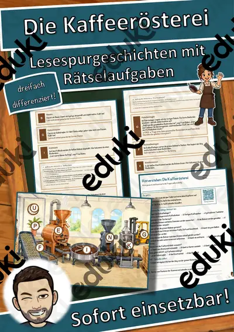
Die Kaffeerösterei – Lesespurgeschichte mit Rätselaufgaben (Klasse 8)

Die Kerze – Lesespurgeschichte mit Rätselaufgaben (Klasse 8)
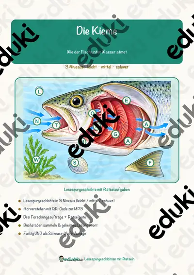
Die Kieme – Lesespurgeschichte mit Rätselaufgaben (Klasse 8)

Die Kirchenorgel – Lesespurgeschichte mit Rätselaufgaben (Klasse 8)

Die Klappbrücke – Lesespurgeschichte mit Rätselaufgaben (Klasse 8)
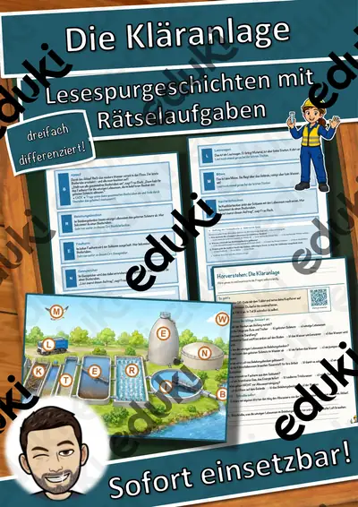
Die Kläranlage – Lesespurgeschichte mit Rätselaufgaben (Klasse 8)

Die Konservenfabrik – Lesespurgeschichte mit Rätselaufgaben (Klasse 8)

Die Lawine – Lesespurgeschichte mit Rätselaufgaben (Klasse 8)

Die Libelle – Lesespurgeschichte mit Rätselaufgaben (Klasse 8)

Die Lichterkette – Reihenschaltung und Parallelschaltung – Lesespurgeschichte mit Rätselaufgaben (Klasse 8)

Die Lunge – Lesespurgeschichte mit Rätselaufgaben (Klasse 8)

Die Mangrove – Lesespurgeschichte mit Rätselaufgaben (Klasse 8)

Die Molkerei – Lesespurgeschichte mit Rätselaufgaben (Klasse 8)
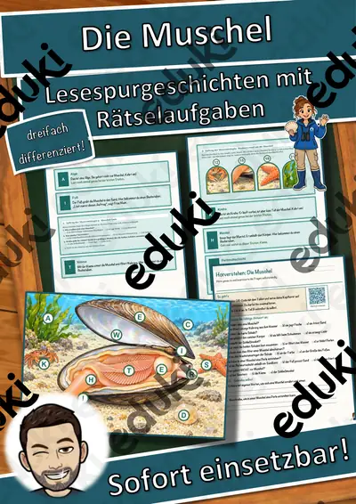
Die Muschel – Lesespurgeschichte mit Rätselaufgaben (Klasse 8)

Die Märzrevolution 1848 – Freiheit, Einheit und die Paulskirche – Lesespurgeschichte mit Rätselaufgaben (Klasse 8)
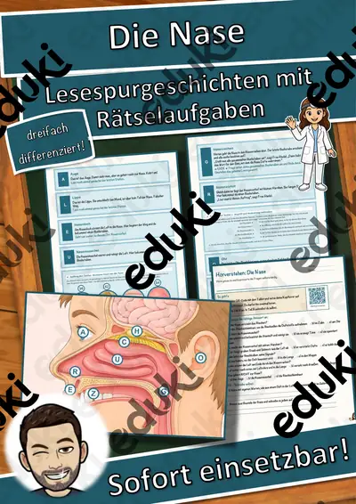
Die Nase – Lesespurgeschichte mit Rätselaufgaben (Klasse 8)

Die Niere – Lesespurgeschichte mit Rätselaufgaben (Klasse 8)

Die Nähmaschine – Lesespurgeschichte mit Rätselaufgaben (Klasse 8)

Die Oase – Lesespurgeschichte mit Rätselaufgaben (Klasse 8)

Die Papierfabrik – Lesespurgeschichte mit Rätselaufgaben (Klasse 8)

Die Pauke – Lesespurgeschichte mit Rätselaufgaben (Klasse 8)

Die Pflanzenzelle – Lesespurgeschichte mit Rätselaufgaben (Klasse 8)

Die Posaune – Lesespurgeschichte mit Rätselaufgaben (Klasse 8)

Die Raumfahrt – Lesespurgeschichte mit Rätselaufgaben (Klasse 8)

Die Rolltreppe – Lesespurgeschichte mit Rätselaufgaben (Klasse 8)

Die Saline – Lesespurgeschichte mit Rätselaufgaben (Klasse 8)

Die Sanddüne – Lesespurgeschichte mit Rätselaufgaben (Klasse 8)

Die Sanduhr – Lesespurgeschichte mit Rätselaufgaben (Klasse 8)

Die Savanne – Lesespurgeschichte mit Rätselaufgaben (Klasse 8)

Die Schildkröte – Lesespurgeschichte mit Rätselaufgaben (Klasse 8)

Die Schleuse – Lesespurgeschichte mit Rätselaufgaben (Klasse 8)

Die Schlucht – Lesespurgeschichte mit Rätselaufgaben (Klasse 8)

Die Schokoladenfabrik – Lesespurgeschichte mit Rätselaufgaben (Klasse 8)

Die Seifensiederei – Lesespurgeschichte mit Rätselaufgaben (Klasse 8)

Die Seilbahn – Lesespurgeschichte mit Rätselaufgaben (Klasse 8)

Die Sonnenblume – Lesespurgeschichte mit Rätselaufgaben (Klasse 8)

Die Steilküste – Lesespurgeschichte mit Rätselaufgaben (Klasse 8)

Die Taiga – Lesespurgeschichte mit Rätselaufgaben (Klasse 8)

Die Talsperre – Lesespurgeschichte mit Rätselaufgaben (Klasse 8)

Die Taschenlampe – Lesespurgeschichte mit Rätselaufgaben (Klasse 8)

Die Thermoskanne – Lesespurgeschichte mit Rätselaufgaben (Klasse 8)

Die Tierzelle – Lesespurgeschichte mit Rätselaufgaben (Klasse 8)
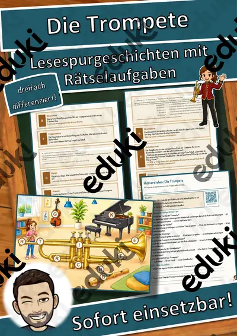
Die Trompete – Lesespurgeschichte mit Rätselaufgaben (Klasse 8)

Die Tropfsteinhöhle – Lesespurgeschichte mit Rätselaufgaben (Klasse 8)
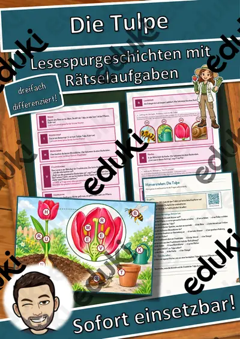
Die Tulpe – Lesespurgeschichte mit Rätselaufgaben (Klasse 8)

Die Tundra – Lesespurgeschichte mit Rätselaufgaben (Klasse 8)

Die Wanderdüne – Lesespurgeschichte mit Rätselaufgaben (Klasse 8)

Die Waschmaschine – Lesespurgeschichte mit Rätselaufgaben (Klasse 8)

Die Weimarer Republik – Lesespurgeschichte mit Rätselaufgaben (Klasse 8)
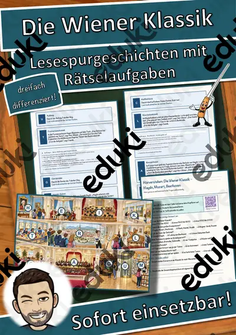
Die Wiener Klassik – Haydn, Mozart, Beethoven – Lesespurgeschichte mit Rätselaufgaben (Klasse 8)

Die Windkraft – Lesespurgeschichte mit Rätselaufgaben (Klasse 8)

Die Windkraftanlage – Lesespurgeschichte mit Rätselaufgaben (Klasse 8)

Die Windmühle – Lesespurgeschichte mit Rätselaufgaben (Klasse 8)

Die Wirbelsäule – Lesespurgeschichte mit Rätselaufgaben (Klasse 8)
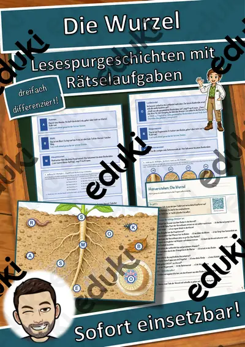
Die Wurzel – Lesespurgeschichte mit Rätselaufgaben (Klasse 8)

Die Zeitungsredaktion – Lesespurgeschichte mit Rätselaufgaben (Klasse 8)

Die Zelle – Lesespurgeschichte mit Rätselaufgaben (Klasse 8)

Die Zentralheizung – Lesespurgeschichte mit Rätselaufgaben (Klasse 8)

Die Zuckerfabrik – Lesespurgeschichte mit Rätselaufgaben (Klasse 8)
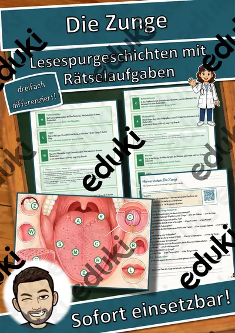
Die Zunge – Lesespurgeschichte mit Rätselaufgaben (Klasse 8)

Die chemische Reaktion – Lesespurgeschichte mit Rätselaufgaben (Klasse 8)

Die Ölmühle – Lesespurgeschichte mit Rätselaufgaben (Klasse 8)

Digitale Spuren – Cookies, Tracking und Profile – Lesespurgeschichte mit Rätselaufgaben (Klasse 8)

Ein Festtagsmenü planen – Einkauf, Mengen und Zeitplan – Lesespurgeschichte mit Rätselaufgaben (Klasse 8)

Elektroschrott – was in alten Handys steckt – Lesespurgeschichte mit Rätselaufgaben (Klasse 8)

Erste Hilfe bei Kälte – Unterkühlung und Erfrierungen – Lesespurgeschichte mit Rätselaufgaben (Klasse 8)

Farbwirkung und Farbpsychologie – was Farben mit uns machen – Lesespurgeschichte mit Rätselaufgaben (Klasse 8)
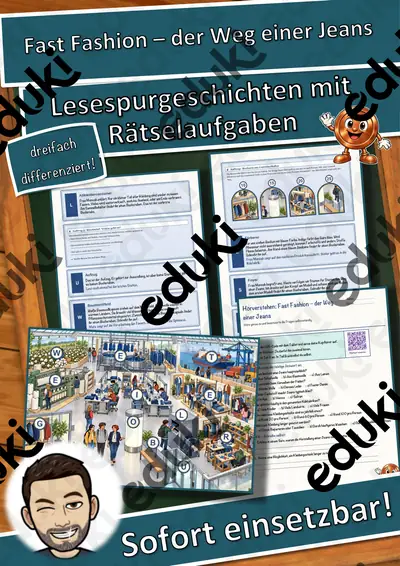
Fast Fashion – der Weg einer Jeans – Lesespurgeschichte mit Rätselaufgaben (Klasse 8)
Flammenfärbung – Metallsalze in der Brennerflamme nachweisen – Lesespurgeschichte mit Rätselaufgaben (Klasse 8)
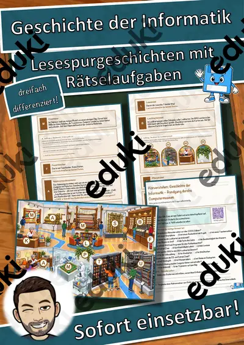
Geschichte der Informatik – Rundgang durchs Computermuseum – Lesespurgeschichte mit Rätselaufgaben (Klasse 8)

Gute Vorsätze – was ich ändern will – Lesespurgeschichte mit Rätselaufgaben (Klasse 8)
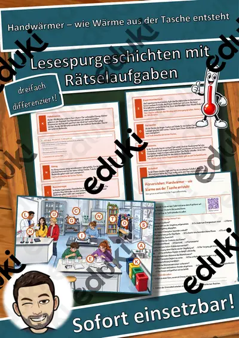
Handwärmer – wie Wärme aus der Tasche entsteht – Lesespurgeschichte mit Rätselaufgaben (Klasse 8)

Improvisation – Musik aus dem Moment – Lesespurgeschichte mit Rätselaufgaben (Klasse 8)

Inklusion im Sport – Para-Sport ausprobieren – Lesespurgeschichte mit Rätselaufgaben (Klasse 8)

Kampfsport und Respekt – fair kämpfen nach Regeln – Lesespurgeschichte mit Rätselaufgaben (Klasse 8)
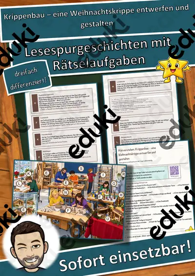
Krippenbau – eine Weihnachtskrippe entwerfen und gestalten – Lesespurgeschichte mit Rätselaufgaben (Klasse 8)

Landschaftsmalerei – Natur im Bild – Lesespurgeschichte mit Rätselaufgaben (Klasse 8)
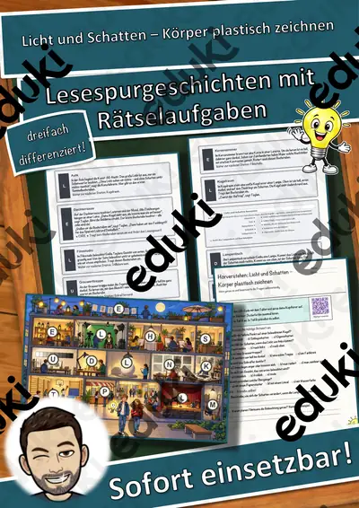
Licht und Schatten – Körper plastisch zeichnen – Lesespurgeschichte mit Rätselaufgaben (Klasse 8)

Lunar New Year at Lin's Home – Lesespurgeschichte mit Rätselaufgaben auf Englisch (Klasse 8)

Löten – meine erste Schaltung – Lesespurgeschichte mit Rätselaufgaben (Klasse 8)

Materialpaket Winter und Advent für die 8. Klasse: 10 Lesespurgeschichten mit Rätselaufgaben fächerübergreifend (Polarlichter, Streusalz, Krippenbau & mehr)
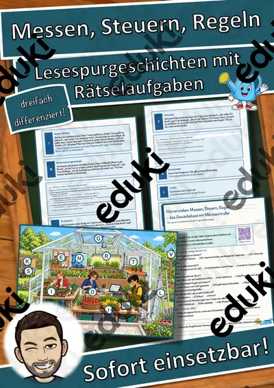
Messen, Steuern, Regeln – das Gewächshaus mit Mikrocontroller – Lesespurgeschichte mit Rätselaufgaben (Klasse 8)

Navigation – den kürzesten Weg berechnen – Lesespurgeschichte mit Rätselaufgaben (Klasse 8)

Online einkaufen – Widerrufsrecht, Fake-Shops und Rabattfallen – Lesespurgeschichte mit Rätselaufgaben (Klasse 8)

Ostereier natürlich färben – Farbstoffe und Indikatoren – Lesespurgeschichte mit Rätselaufgaben (Klasse 8)

Paketflut im Advent – ein Tag im Paketzentrum – Lesespurgeschichte mit Rätselaufgaben (Klasse 8)
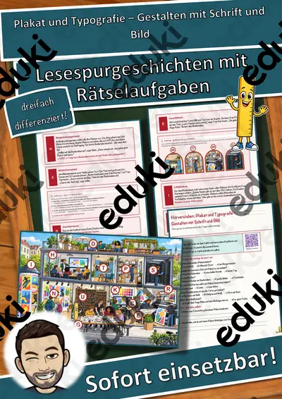
Plakat und Typografie – Gestalten mit Schrift und Bild – Lesespurgeschichte mit Rätselaufgaben (Klasse 8)

Polarlichter – wenn der Himmel grün leuchtet – Lesespurgeschichte mit Rätselaufgaben (Klasse 8)

Popmusik – wie ein Hit entsteht – Lesespurgeschichte mit Rätselaufgaben (Klasse 8)

Samba, Reggae & Co. – Musik aus Lateinamerika und der Karibik – Lesespurgeschichte mit Rätselaufgaben (Klasse 8)

Secrets of the Chestnut Tree – Lesespurgeschichte mit Rätselaufgaben auf Englisch (Klasse 8)

Sich für andere einsetzen – Lesespurgeschichte mit Rätselaufgaben (Klasse 8)

Skilanglauf und Biathlon – gleiten, laufen, zielen – Lesespurgeschichte mit Rätselaufgaben (Klasse 8)

Smart Home – das vernetzte Haus – Lesespurgeschichte mit Rätselaufgaben (Klasse 8)

Social Media – wie der Feed ausgewählt wird – Lesespurgeschichte mit Rätselaufgaben (Klasse 8)

Streusalz und Gefrierpunkt – warum Salz Eis schmelzen lässt – Lesespurgeschichte mit Rätselaufgaben (Klasse 8)
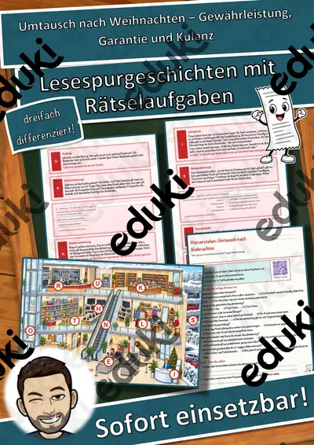
Umtausch nach Weihnachten – Gewährleistung, Garantie und Kulanz – Lesespurgeschichte mit Rätselaufgaben (Klasse 8)

Verantwortung in der digitalen Welt – Lesespurgeschichte mit Rätselaufgaben (Klasse 8)

Vincent van Gogh – Farbe und Pinselstrich – Lesespurgeschichte mit Rätselaufgaben (Klasse 8)

Volleyball – pritschen, baggern, schmettern – Lesespurgeschichte mit Rätselaufgaben (Klasse 8)
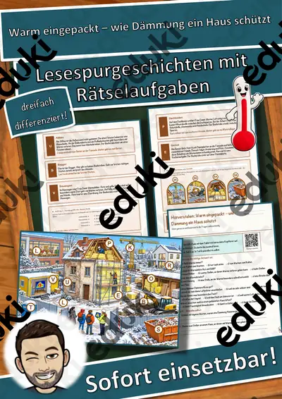
Warm eingepackt – wie Dämmung ein Haus schützt – Lesespurgeschichte mit Rätselaufgaben (Klasse 8)

Werbung erkennen – wie sie wirkt und was dahintersteckt – Lesespurgeschichte mit Rätselaufgaben (Klasse 8)
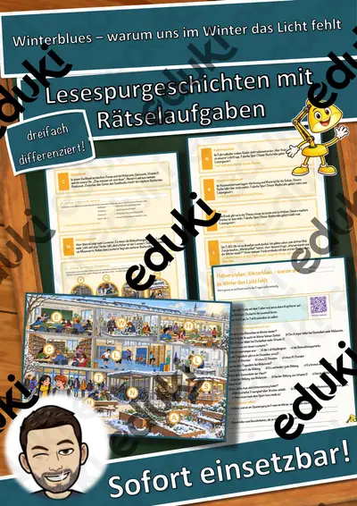
Winterblues – warum uns im Winter das Licht fehlt – Lesespurgeschichte mit Rätselaufgaben (Klasse 8)
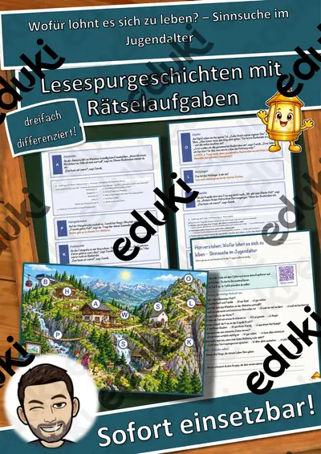
Wofür lohnt es sich zu leben? – Sinnsuche im Jugendalter – Lesespurgeschichte mit Rätselaufgaben (Klasse 8)
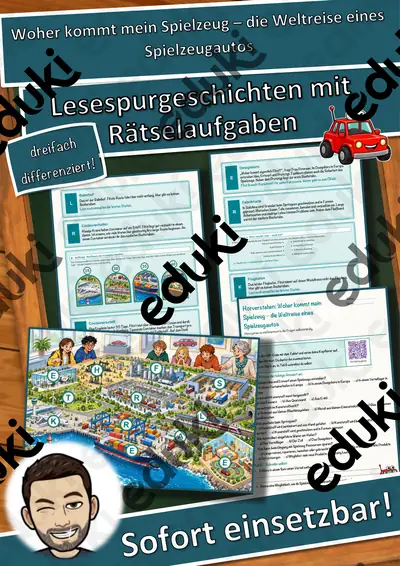
Woher kommt mein Spielzeug – die Weltreise eines Spielzeugautos – Lesespurgeschichte mit Rätselaufgaben (Klasse 8)

Zinsen berechnen – rund um den Weltspartag – Lesespurgeschichte mit Rätselaufgaben (Klasse 8)
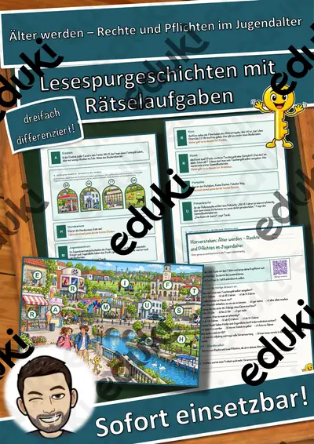
Älter werden – Rechte und Pflichten im Jugendalter – Lesespurgeschichte mit Rätselaufgaben (Klasse 8)
Lesespurgeschichten in der 8. Klasse
In der achten Klasse liegt der Schwerpunkt auf Fachtexten: Die Stationen bilden technische oder naturwissenschaftliche Abläufe ab, wie sie auch im Lehrplan stehen.
Jede Geschichte liegt in drei Niveaustufen vor, die sich in Textlänge, Satzbau und Aufgabenanspruch unterscheiden. Weg, Stationen und Lösungswort bleiben gleich, sodass alle Fassungen gleichzeitig in einer Klasse laufen können.
Themen auf dieser Seite
Beispiele aus dieser Sammlung: Der Baumstamm · Der Baukran · Smart Home · Das Atom · Der Delfin · Der Leserbrief · Die Industrialisierung · Der Konzertsaal.